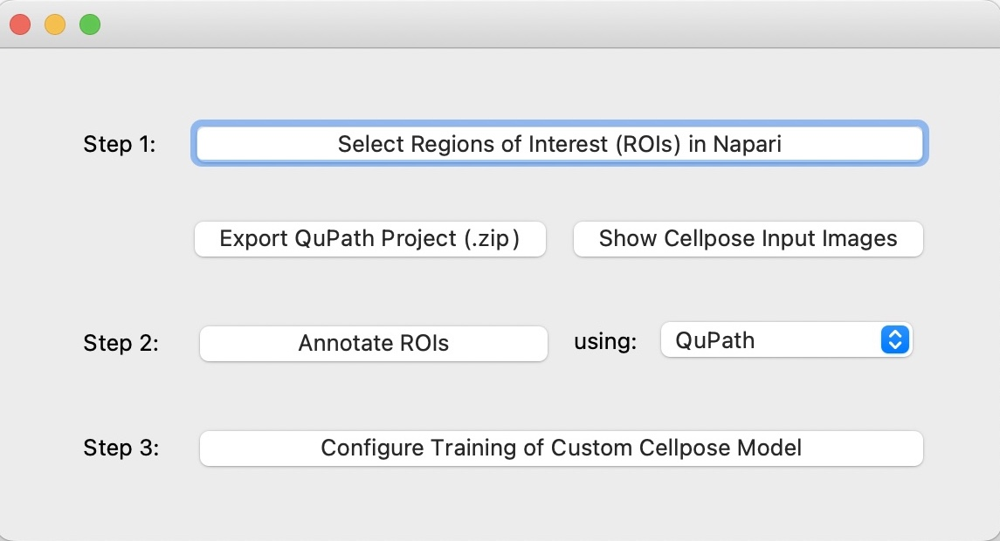

Getting started¶
How to install it¶
The tool has already been installed on the following machines:
TODO
Installing it on your machine¶
If you prefer to install on your laptop, you will need miniconda or anaconda. The tool can be installed on Windows, Mac, or Linux.
Once you have conda, open a terminal and run the following command:
conda create --name spacem_annotator_env -c abailoni -c conda-forge spacem_annotator
How to run it¶
After being installed, you can start a new project by typing the following two commands in a shell:
conda activate spacem_annotator_env
python -m spacem_annotator
Selecting a project directory¶
After starting SpaceM Annotator, you will be asked to select the project directory.
What is the project directory? It is the folder containing all the generated data and images. If you are starting a new annotation project, then create and select an empty folder. Otherwise, select the directory of an existing annotation project.
Tip
You can also pass the path of the project directory as a command line argument when you run SpaceM Annotator:
python -m spacem_annotator --proj_dir /path/to/the/project/directory
Starting Window¶
{kind=link}
After selecting a project directory, you have two choices:
Select Regions of Interest: First, select this option to add images to the project and select some regions of interest.
Label Regions of Interest: After selecting some regions of interest, click on this option to start annotating your regions of interest.